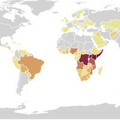
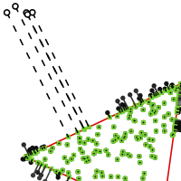
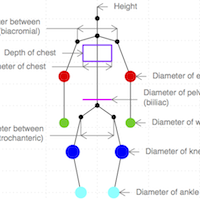

aalab is our place to do research on archetypal analysis.
The Merriam-Webster Online Dictionary defines an archetype as the original pattern or model of which all things of the same type are representations or copies. Then, the aim of the archetypal analysis is to find the "pure types", the archetypes, within a set defined in a specific context. The concept of archetypes is used in many different areas, the set can be defined in terms of literature, philosophy, psychology and also statistics. Here, the concrete problem is to find a few, not necessaily observed, points (archetypes) in a set of multivariate observations such that all the data can be well represented as convex mixtures of the archetypes.


